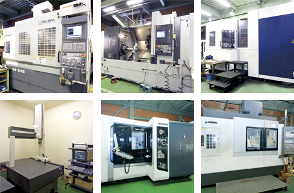
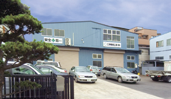

沿革
売る側から、
つくる側へ。
- 昭和39年3月
中野区にて、超硬合金付き特殊バイトおよびカッターの販売を開始。
- 昭和39年4月
納入先の支援と販売拡張にともない、治工具はじめ精密加工の販売を開始。
- 昭和48年9月
会社組織を変更し、社名を三伸機械工業株式会社とする。
- 昭和49年9月
現在地に精密機械加工を主とした自社工場を設立。
- 平成3年3月
本社および工場を統合。
- 平成17年
埼玉県志木市に工場を新設。
- 平成21年
ISO 9001 認証取得。
埼玉県志木市・精密機械加工
三伸機械工業は、埼玉県志木市で精密機械加工をしている会社です。治工具、専用機部品の設計製作、自動車試作品、測定工具、ホーニング加工、溶接まで。マシニングセンター6台と各種旋盤・研磨機を揃え、小物1点から大物の三次元加工までを引き受けます。
昭和39年に切削工具の商社として始まり、いまは自らつくる側にいます。「小さな事から始めよ」が創業の礎です。

できること
機械加工そのものだけでなく、その前後にある「治具をつくる」「専用機の部品を設計する」「測って確かめる」までを引き受けます。
マシニングセンター、NC旋盤、NCフライスによる切削。当社の中心の仕事です。
立体的な形状の加工。ピン1本のような小物と、この三次元加工の両方をこなせることが当社の特徴です。
加工や組立に使う治具・工具の製作。創業時から続けている仕事です。
図面のない段階からのご相談も承ります。設計して、つくって、お渡しします。
測るための道具そのものの製作。精度が問われる分野です。
内径を仕上げる加工。面粗さと真円度を追い込みます。
半自動・MIG・TIG。TIGはアルミ、SUSにも対応します。
切削工具の販売から始まった会社ですが、いまは試作品の製作も手がけています。
主要設備
加工範囲まで書いておきます。ご自分の図面と見比べて、載るかどうかをご判断ください。判断がつかない場合はお電話ください。
| 名称 | メーカー | 型式 | 加工範囲 | 台数 | 備考 |
|---|---|---|---|---|---|
| 横型マシニングセンター | 森精機 | NH6300 DCG | X1050 Y900 Z980 | 1 | — |
| 横型マシニングセンター | 森精機 | NHX4000 | X560 Y560 Z660 | 1 | — |
| 立型マシニングセンター | オークマ | MB-66VB | X1500 Y660 Z660 | 1 | — |
| 立型マシニングセンター | 森精機 | NV5000 α-1 | X1020 Y510 Z510 | 1 | — |
| 立型マシニングセンター | オークマ | MB-56VB | X1050 Y560 Z460 | 1 | — |
| 立型マシニングセンター | オークマ | MC-4VB | X760 Y410 Z450 | 1 | — |
| NC旋盤 | 森精機 | NL-3000 | φ420 L2123 | 1 | — |
| NC旋盤 | 森精機 | NL-2000 | φ300 L600 | 1 | — |
| NCフライス | 新潟鉄工 | ハンディサム1000 | 1500 × 300 × 400 | 1 | — |
| NCフライス | 静岡鉄工 | AN-SRF | 800 × 300 × 400 | 1 | — |
| 汎用フライス | オークマ | — | 700 × 200 × 300 | 1 | — |
| 汎用フライス | 日立精機 | — | 700 × 200 × 300 | 1 | — |
| 汎用旋盤 | 浜津 | — | φ1000 × 200 | 1 | 四方爪チャック有 |
| 汎用旋盤 | 森精機 | — | φ300 × 1000 | 1 | — |
| 汎用旋盤 | マザック | — | φ300 × 1000 | 1 | — |
| 外径研磨 | シギヤ | — | φ150 × 400 | 1 | — |
| 内径研磨 | 光陽 | — | φ150 × 400 | 1 | — |
| 平面研磨 | オカモト | PSG84DX | 400 × 800 × 400 | 1 | — |
| ラジアルボール盤 | — | — | — | 1 | — |
| 半自動溶接・MIG溶接 | パナソニック | YD-350GR3 | — | 1 | — |
| TIG溶接 | パナソニック | YC300BP4 | — | 1 | アルミ・SUS 可能 |
| 名称 | メーカー | 型式 | 移動範囲 | 台数 |
|---|---|---|---|---|
| 三次元測定機 | ミツトヨ | BH710 | 400 × 800 × 400 | 1 |
| ロックウェル硬度計 | — | — | — | 1 |
| その他 各種検査設備 | — | — | — | 2 |
| 天井クレーン 2.8t | 日立 | — | — | 2 |
| 天井クレーン 1.5t | 日立 | — | — | 1 |
| HANDY SURF（表面粗さ計） | 東京精密 | — | — | 1 |
ごあいさつ
弊社は、先代の栗原信夫が切削工具の販売を主とした「商社」として昭和39年、東京・中野区において設立しました。時代の変革に溺れず、お客様に助けられ、地道に今日まで歩んで参りました。
今現在、切削工具、治工具、自動車試作品とその内容は変化しましたが、創業の礎である「小さな事から始めよ」を基本姿勢に、まさに原点回帰を実践しております。
お客様に信頼される事こそが我社の生きる道と思っており、それは一朝一夕で生まれるものではないことも理解しております。ここ数年、若者達には「チャレンジ＆トライ」を掲げ「失敗を恐れずに突き進め」と言って来ました。これが実を結び技術力の向上につながったと確信しております。
製造業を取り巻く環境は今後、益々厳しい状況になり、零細企業の生き残る道は、明確にその特徴を見い出すことになるでしょう。弊社の特徴は、「ピン1本から三次元加工までを幅広くこなす」ことです。そして厳しい環境の中、新しい事への挑戦、お客様の信頼、そして初心に帰って行動する事が弊社の理念です。
どうぞ三伸機械工業株式会社に御注目ください。
代表取締役社長 栗原 和夫
沿革
中野区にて、超硬合金付き特殊バイトおよびカッターの販売を開始。
納入先の支援と販売拡張にともない、治工具はじめ精密加工の販売を開始。
会社組織を変更し、社名を三伸機械工業株式会社とする。
現在地に精密機械加工を主とした自社工場を設立。
本社および工場を統合。
埼玉県志木市に工場を新設。
ISO 9001 認証取得。
よくあるご質問
当社の特徴は「ピン1本から三次元加工まで幅広くこなす」ことです。小さな部品1点からご相談ください。
横型マシニングセンター（森精機 NH6300 DCG）で X1050 × Y900 × Z980mm、立型マシニングセンター（オークマ MB-66VB）で X1500 × Y660 × Z660mm が最大です。旋削は NC旋盤 NL-3000 で φ420 × L2123mm まで対応します。
治工具や専用機部品の設計製作を営業品目としています。図面がない状態からのご相談も承ります。
TIG溶接機（パナソニック YC300BP4）でアルミ・SUS に対応します。半自動溶接・MIG溶接機も備えています。
三次元測定機（ミツトヨ BH710、移動範囲 400×800×400mm）、ロックウェル硬度計、東京精密 HANDY SURF などを備えています。平成21年に ISO 9001 認証を取得しました。
会社概要
アクセス

載る機械があるか、何工程になるか、その場でお答えできます。図面がない段階のご相談も承ります。